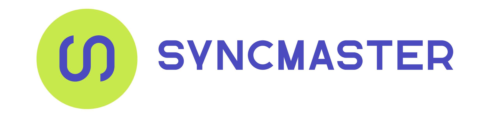
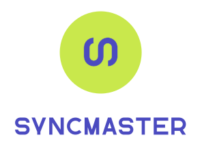
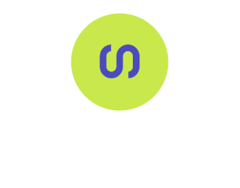

01 / Primary lockup
The primary horizontal lockup leads with the acid disc and a brand-purple SYNCMASTER wordmark. This is the default everywhere there's a light or paper-toned surface — homepage hero, deck title slides, marketing collateral, email headers.
Toggle Tweaks (toolbar) to preview the lockup against different surfaces and at different sizes.
02 / Horizontal variants
Two variants of the horizontal lockup — same disc, swap the wordmark colour to match the surface. Use the purple wordmark on any light surface (paper, muted, secondary). Use the white wordmark on ink, ink-raised, or purple surfaces.

03 / Stacked lockup
Drop to the stacked form for square avatars, app-store tiles, side panels, business cards — anywhere the horizontal form would crop awkwardly. Same two-variant rule: purple on light, white on dark.


04 / Mark only
The mark works on every surface unchanged — the acid disc carries the contrast, and the purple glyph reads on light, dark, and brand-purple alike. Use this for favicons, app icons, the dashboard sidebar mark, footer chips, and anywhere a small monogram is needed.
05 / Scale
The glyph is a single filled vector shape with a thin lime knockout where it meets the disc edge — so it stays crisp from 24-pixel favicon up to billboard.
06 / Colors
The official SVGs freeze acid lime as #C9E84C — the canonical hex for the logo,
rendered equivalent of the design system's oklch(0.88 0.18 120) token.
Use #C9E84C anywhere the logo is rasterised or imported into a vector editor; use the
--sm-acid token anywhere it lives inside HTML/CSS.
07 / Files